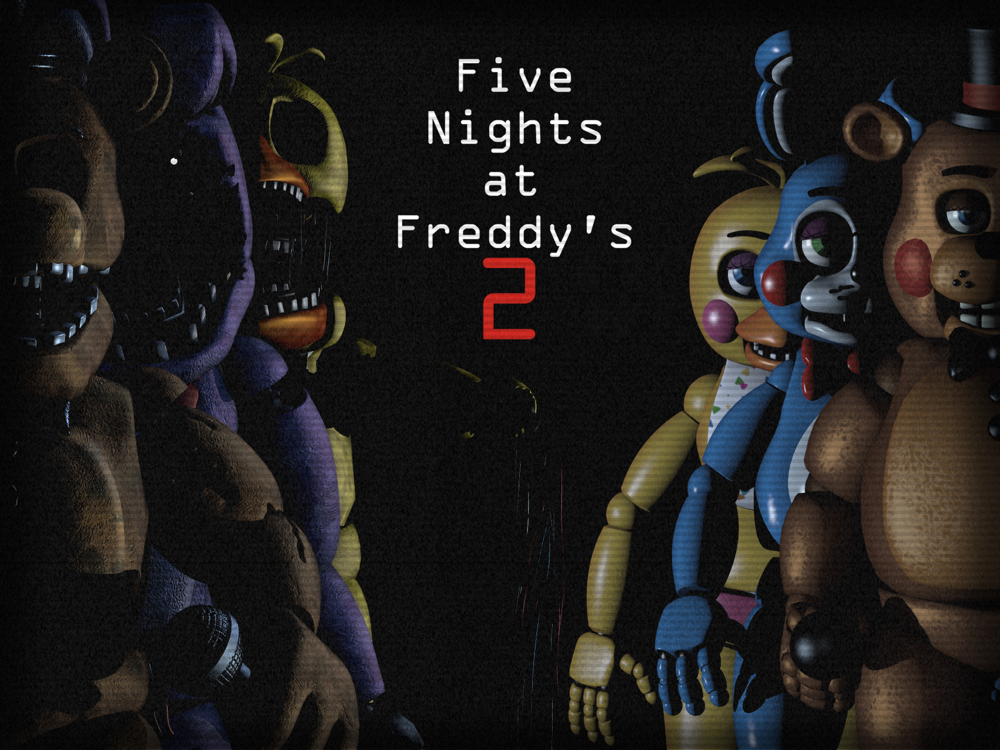

A história se passa em 1987. O personagem do jogador é Jeremy Fitzgerald, começou a trabalhar como guarda de segurança noturno na melhorada Pizzaria Freddy Fazbear. A mesma pessoa do jogo anterior (só que mais nova) um cara telefona para Jeremy no início de cada noite para explicar a jogabilidade e história. Ele explica que os novos (na época) animatrônicos, que têm um software especial de reconhecimento facial para proteger as crianças de danos potenciais, não foram programados com um modo noturno apropriado, então quando eles não ouvem nenhum som, sua programação lhes diz que eles estão no lugar errado e procuram a fonte sonora mais próxima em busca de pessoas para entreter, lugar que calha de ser o escritório. Assim como no jogo anterior, a programação dos animatrônicos lhes diz que não deveria haver ninguém no restaurante fora do horário do expediente, por isso, ao se depararem com Jeremy, eles acreditarão que ele é um endoesqueleto de animatrônico sem um revestimento e o introduzirão em um revestimento sobressalente de Freddy Fazbear, matando-o no processo. O homem ao telefone explica que o restaurante tem uma fonte de energia ilimitada à noite (ao contrário do jogo anterior), mas não há portas bloqueando o acesso ao escritório, o que obriga o jogador a usar uma máscara sobressalente de Freddy Fazbear para fazer a maioria dos animatrônicos não confundi-lo com um endosqueleto. O jogador será informado de que deve continuamente dar corda em uma caixa de música para evitar que a música pare e a marionete saia de sua caixa e ataque o jogador.
